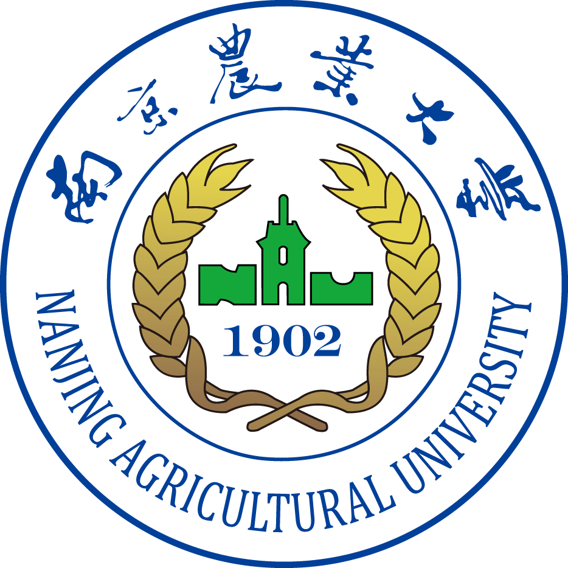
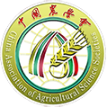

About Me
Hi, I'm Ziming Zang (臧子茗), an undergraduate student majoring in Information and Computing Science at Nanjing Agricultural University. My research interests include statistical genetics, quantitative biology, causal inference, and AI4Health.
I will soon join Shanghai Institute of Nutrition and Health, Chinese Academy of Sciences, to pursue a Ph.D. Previously, I was a member of Jin's Lab at the Academy for Advanced Interdisciplinary Studies (AAIS), Nanjing Agricultural University, advised by Prof. Shichao Jin. In February 2026, I was a visiting student at Nanyang Technological University (NTU), advised by Prof. Wei Yang Bryan Lim.
Education
University of Chinese Academy of Sciences
Ph.D. in Computational Biology
2027 (Expected)

Nanjing Agricultural University
B.Sc. in Information and Computing Science
2023-2027
Research Experience
CauReg-T2D: Causal Gene Inference in Type 2 Diabetes
Undergraduate Thesis · Advisor: Prof. Ting Qi, Shanghai Institute of Nutrition and Health, CAS
Oct. 2026 - Present
Combining DNA sequence representations with heterogeneous graph neural networks to rank candidate causal genes using genome-wide summary statistics and functional genomic annotations.
Multimodal Algorithms for Wheat Phenological Stages
National Student Research Training · Advisor: Prof. Shichao Jin, NJAU
May 2025 - May 2026
Built a UAV RGB wheat phenology dataset and developed multimodal image/environment modeling with Transformer, LSTM, MLP, and field-plot segmentation.
GWAS of Yield-Related Traits in Rice
Advisor: Prof. Jin Zhang, NJAU
Sept. 2025 - Feb. 2026
Applied statistical genetic models, functional enrichment, and candidate-gene discovery to rice yield traits; contributed to a peer-reviewed paper in Plants.
Academic Activities
Westlake University · SPONGE Summer School
Visiting Student
August 2026
Nanyang Technological University · AI & GPT Winter School
Visiting Student
February 2026

2025 China Smart Agriculture Annual Meeting & Innovation Competition
Speaker
August 2025
Publications
Awards and Honors
Technical Skills
Programming: Python, R, MATLAB
Frameworks: PyTorch
Tools: Git, Linux, LaTeX